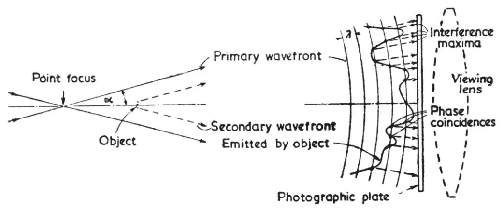
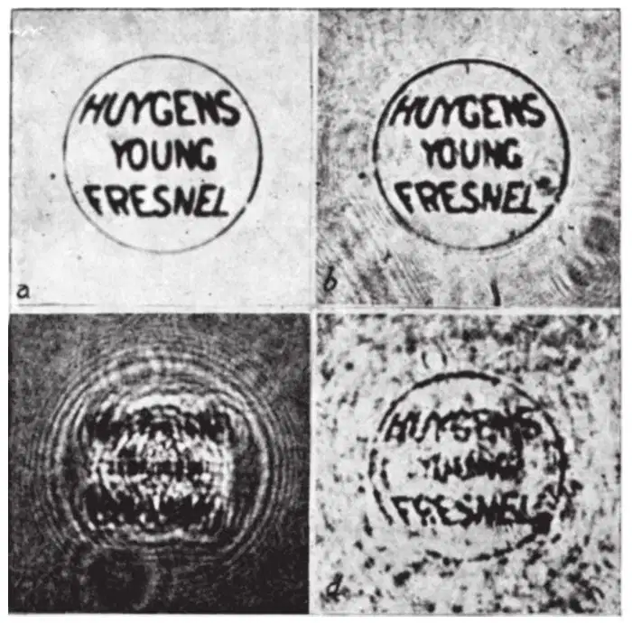

中文
中文D. Gabor
Editor’s Note
Dennis Gabor was an employee of a large electrical manufacturer when be produced this paper, ostensibly directed at the improvement of the electron microscope but which has now become the principle underlying the technique called holography, by means of which all the information needed to construct a three-dimensional view can be stored on a two-dimensional surface, and which is widely used in devices such as bank and credit cards. Gabor moved to Imperial College London in the 1950s and received a Nobel Prize in 1971. 中文
IT is known that the spherical aberration of electron lenses sets a limit to the resolving power of electron microscopes at about 5 A. Suggestions for the correction of objectives have been made; but these are difficult in themselves, and the prospects of improvement are further aggravated by the fact that the resolution limit is proportional to the fourth root of the spherical aberration. Thus an improvement of the resolution by one decimal would require a correction of the objective to four decimals, a practically hopeless task. 中文
The new microscopic principle described below offers a way around this difficulty, as it allows one to dispense altogether with electron objectives. Micrographs are obtained in a two-step process, by electronic analysis, followed by optical synthesis, as in Sir Lawrence Bragg’s “X-ray microscope”. But while the “X-ray microscope” is applicable only in very special cases, where the phases are known beforehand, the new principle provides a complete record of amplitudes and phases in one diagram, and is applicable to a very general class of objects. 中文
Fig. 1 is a broad explanation of the principle. The object is illuminated by an electron beam brought to a fine focus, from which it diverges at a semi-angle α. Sufficient coherence is assured if the nominal or Gaussian diameter of the focus is less than the resolution limit, λ/2 sin α. The physical diameter, determined by diffraction and spherical aberration of the illuminating system, can be much larger. The object is a small distance behind (or in front of) the point focus, followed by a photographic plate at a large multiple of this distance. Thus the arrangement is similar to an electron shadow microscope; but it is used in a range in which the shadow microscope is useless, as it produces images very dissimilar to the original. The object is preferably smaller than the area which is illuminated in the object plane, and it must be mounted on a support which transmits an appreciable part of the primary wave. The photographic record is produced by the interference of the primary wave with the coherent part of the secondary wave emitted by the object. It can be shown that, at least in the outer parts of the diagram, interference maxima will arise very nearly where the phases of the primary and of the secondary wave have coincided, as illustrated in Fig. 1. 中文

Fig. 1. Interference between homocentric illuminating wave and the secondary wave emitted by a small object 中文
If this photograph is developed by reversal, or printed, the loci of maximum transmission will indicate the regions in which the primary wave had the same phase as the modified wave, and the variations of the transmission in these loci will be approximately proportional to the intensity of the modified wave. Thus, if one illuminates the photographic record with an optical imitation of the electronic wave, only that part of the primary wave will be strongly transmitted which imitates the modified wave both in phases and in amplitudes. It can be shown that the “masking” of the regions outside the loci of maximum transmission has only a small distorting effect. One must expect that looking through such a properly processed diagram one will see behind it the original object, as if it were in place. 中文
The principle was tested in an optical model, in which the interference diagram was produced by monochromatic light instead of by electrons. The print was replaced in the apparatus, backed by a viewing lens which admitted about sin α = 0.04, and the image formed was observed and ultimately photographed through a microscope. It can be seen in Fig. 2 that the reconstruction, though imperfect, achieves the separation of some letters which could just be separated in direct observation of the object through the same optical system. The resolution is markedly imperfect only in the centre, where the circular frame creates a disturbance. Other imperfections of the reconstruction are chiefly due to defects in the microscope objectives used for the production of the point focus, and for observation. 中文
It is a striking property of these diagrams that they constitute records of three-dimensional as well as of plane objects. One plane after another of extended objects can be observed in the microscope, just as if the object were really in position. 中文

Fig. 2. (a) Original micrograph, 1.4 mm. diameter. (b) Micrograph, directly photographed through the same optical system which is used for the reconstruction (d). Ap. 0.04. (c) Interference diagram, obtained by projecting the micrograph on a photographic plate with a beam diverging from a point focus. The letters have become illegible by diffraction. (d) Reconstruction of the original by optical synthesis from the diagram at the left. To be compared with (b). The letters have again become legible 中文
Racking the microscope through and beyond the point focus, one finds a second image of the original object, in central-symmetrical position with respect to the point focus. The explanation is, briefly, that the photographic diagram cannot distinguish positive and negative phase shifts with respect to the primary wave, and this second image corresponds to the same phase shifts as the original, but with reversed sign. 中文
If the principle is applied to electron microscopy, the dimensions in the optical synthetizer ought to be scaled up in the ratio of light waves to electron waves, that is, about 100,000 times. One must provide an illuminating system which is an exact optical imitation of the electronic condenser lens, including its spherical aberration. To avoid scaling-up the diagram, one has to introduce a further lens, with a focal length equal to the distance of the object from the photographic plate in the electronic device, in such a position that the plate appears at infinity when viewed from the optical space of the point focus. Work on the new instrument, which may be called the “electron interference microscope”, will now be taken in hand. 中文
I wish to thank Mr. I. Williams for assistance in the experiments, and Mr. L. J. Davies, director of research of the British Thomson-Houston Company, for permission to publish this note. 中文
(161, 777-778; 1948)
D. Gabor: Research Laboratory, British Thomson-Houston Co., Ltd., Rugby.